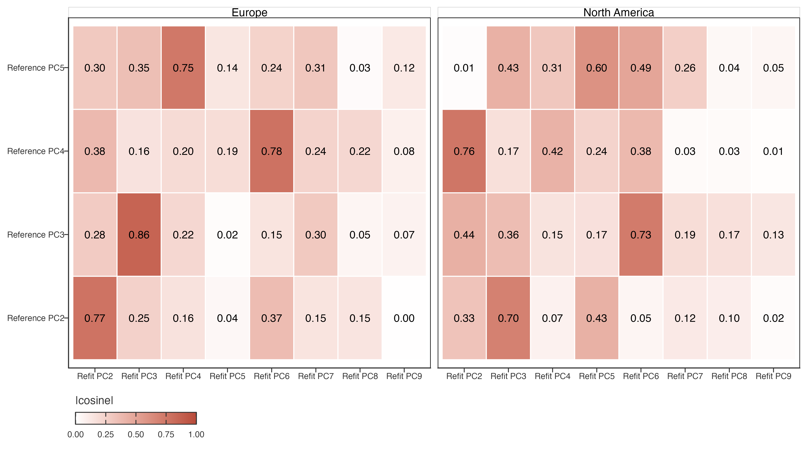

PCA Stability and Association Contract
Purpose
PCA identifies empirical modes of covariance; it does not establish a physical process or assign causation. Before interpreting PC1–PC5 spatially, the retained modes must be checked for stability under resampling and geographic omission.
PCA 给出协方差模态，不等于物理机制或因果归因。解释 PC1–PC5 空间格局前，须检验重采样与地理遗漏下的稳定性。
Required checks
| Check | Design | Report |
|---|---|---|
| Random split stability | Refit PCA on repeated independent half-samples; align component signs to the reference loading. | Variance explained and loading cosine congruence for PC1–PC5. |
| Leave-continent-out stability | Refit after omitting each represented continent. | Whether a retained component is dominated by one continental sample. |
| Input representation sensitivity | Compare current nt=99 STL-trend anomaly PCA with raw annual and 7-, 9-, and 11-year centred raw-annual moving-average branches. |
Loading/subspace alignment, score alignment, geographic omission stability, and retention of the separate raw-seasonal association-field result. |
| Score association robustness | Fit geography-only and geography-plus-ERA5 associations with deterministic spatial blocks. | Held-out performance increment, not only in-sample \(R^2\). |
必做：随机半样本、留一大洲、输入表征敏感性，以及空间分块关联模型验证。报告留出性能，不只报告样本内 \(R^2\)。
Why the active PCA input remains STL
The moving-average branch is not rejected because it is rough or unstable. In fact, a 9-year annual centred mean gives a smooth PC1 and a more geographically stable PC2–PC3 subspace than the active STL run. Its temporal loading subspace also overlaps the STL PC2–PC3 subspace. This internal agreement is insufficient: the corresponding cell scores differ materially, and the external spatial association test changes.
移动平均并非因“粗糙”或“内部不稳定”而被排除。9 年年度居中平均的 PC1 平滑，PC2–PC3 的地理遗漏稳定性甚至高于 STL，时间载荷子空间也与 STL 重叠。但内部一致不足以决定方法，因为格网分数不同，外部空间关联结果也随之改变。
With STL, adding the joint PC2–PC3 score pair to the geography/morphology baseline increases spatial held-out \(R^2\) by 0.411 for the JJA NAO prior-summer field and by 0.323 for its AO-family replication. The corresponding increments are 0.114/0.022 for a 7-year mean, 0.077/\(-0.012\) for a 9-year mean, and 0.042/\(-0.022\) for an 11-year mean. PC1 remains near zero under STL and all moving-average branches. Thus a simple annual low-pass filter does not preserve the particular secondary spatial geometry that has external climate consistency in this project.
STL 下，PC2–PC3 相对地理/形态基线的空间留出 \(R^2\) 增量：JJA NAO 去年夏季场为 0.411，AO-family 为 0.323。7 年移动平均为 0.114/0.022；9 年为 0.077/\(-0.012\)；11 年为 0.042/\(-0.022\)。所有表征中 PC1 都接近零。故简单年度低通滤波未保留本项目具外部气候一致性的次级空间几何。
This does not mean that STL reveals a causal teleconnection signal. The lagged association field is calculated separately from linearly detrended, un-smoothed raw JJA temperature. PCA is only used to ask where that raw association field is spatially located. A centred nine-year mean would mechanically blur a temperature response over approximately four years on either side, so it is unsuitable for estimating annual or seasonal lag directly. STL trends are likewise not used for that purpose.
这不代表 STL 揭示因果遥相关信号。滞后关联场独立由线性去趋势、未平滑的 raw JJA 温度计算；PCA 只问该 raw 关联场位于何种空间轨迹几何。9 年居中平均会在前后约 4 年机械扩散温度响应，不能直接估计年或季节 lag；STL trend 同样不用于该任务。
Removing the first and last four PCA years (1985–2016) leaves the held-out PC2–PC3 increments almost unchanged (NAO 0.404, AO 0.329), while PC1 remains near zero. The 1985–2016 PC1 and PC2 loadings still align strongly with their full-period counterparts on overlapping years. Its LOCO subspace stability weakens because the test discards one fifth of the 40-year trajectory, so it is not evidence that the full-period endpoint estimates are artefacts. It is a boundary check: the retained external result is not created solely by the first or last four years.
去掉 PCA 首末各 4 年（1985–2016）后，PC2–PC3 留出增量仍为 NAO 0.404、AO 0.329，PC1 仍接近零。重叠年份的 PC1、PC2 载荷仍与全期高度一致。LOCO 稳定性下降是因时间轨迹少了五分之一，不能反推全期端点为伪影；该检验只说明外部结果并非仅由首末 4 年制造。
Alignment rule
PCA signs are arbitrary. The first-pass ordered-axis test uses absolute loading cosine congruence, which treats a sign reversal as equivalent. A cross-component matrix then compares each reference PC2–PC5 with refitted PC2–PC9 after continental omission. This distinguishes an ordered-axis mismatch from a possible rank change or rotation; labels are not transferred automatically when matching is weak or ambiguous.
PCA 正负号任意。先看同序号轴的绝对余弦，再看 PC2–PC5 对重算 PC2–PC9 的交叉矩阵。这样可区分排序错位、旋转与真正的不稳定；匹配弱或含糊时不强行沿用标签。
The lake-equal cross-component result changes the interpretation of the ordered-axis failure. Europe retains a plausible correspondence from reference PC4 to refitted PC6 (0.779) and reference PC5 to refitted PC4 (0.747). North America retains plausible displacement from PC3 to refitted PC6 (0.729) and PC4 to refitted PC2 (0.758). However, the mapping is not a clean permutation: multiple reference modes compete for the same refitted axis, and North-American omission leaves PC5 with a best congruence of only 0.601. Thus PC2–PC5 contain partially recurring temporal contrasts whose order and separation depend on continental composition; they are not five independently stable global axes.
交叉矩阵表明，部分低同序号一致性来自排序变化：去欧洲后 PC4 接近新 PC6、PC5 接近新 PC4；去北美后 PC3 接近新 PC6、PC4 接近新 PC2。但这不是干净的一一置换，多个旧轴会竞争同一新轴，且去北美后 PC5 最高仅 0.601。故 PC2–PC5 是部分可重复、但顺序与分离度受大陆组成影响的时间对比，不是五个各自稳定的全球轴。
Spatially balanced sensitivity
Lake-equal PCA estimates covariance for a typical sampled lake; dense regions therefore receive greater weight. A second PCA first aggregates baseline-centred trajectories within occupied equal-area spherical cells (72 longitude × 21 equally spaced in sin(latitude) bins), then gives each cell one row. This changes the estimand to covariance for a typical sampled spatial cell, rather than “correcting” lake abundance.
湖泊等权 PCA 描述典型被采样湖泊的协变，湖泊密集区权重更大。空间平衡敏感性分析先在等面积球面格网内汇总基线中心化轨迹，再令每个格网一票；它改变的是估计对象，不是“纠正”湖泊数量。
The fitted cell-PCA axes are then made available at lake resolution without refitting PCA. Each lake’s baseline-centred trajectory is centred by the equal-area-cell mean trajectory used in PCA and projected onto the fixed loading vectors. Thus lake score maps retain the spatial-balanced covariance geometry while still locating individual lakes within it. This projection is necessary: running a second PCA on lake trajectories would restore the original density weighting.
拟合后的格网 PCA 轴可投影回湖泊尺度，而不重新拟合 PCA：每个湖泊先减去 PCA 使用的格网轨迹均值，再投影到固定载荷。湖泊地图因而保留空间平衡的协方差几何；若重新对湖泊做 PCA，则会重新引入湖泊密度权重。
Under spatial balancing, best cross-component matches for PC2–PC5 remain at least 0.70, 0.80, 0.70, and 0.65 across continental omissions, respectively. North-American omission cleanly exchanges the second and third ranked axes (reference PC2 matches refitted PC3, 0.701; reference PC3 matches refitted PC2, 0.995); PC5 remains stable (0.917). Europe preserves PC2 directly (0.979) and PC3 moderately (0.797), while PC4 and PC5 mix. This is stronger evidence that secondary temporal contrasts recur globally, but it does not make rank labels or physical meanings invariant to grid resolution and sample composition.
空间平衡后，PC2–PC5 在各遗漏检验中的最佳匹配最低分别为 0.70、0.80、0.70、0.65。去北美时 PC2/PC3 明确互换排序，PC5 仍稳定；去欧洲时 PC2 保持、PC3 中等保持，PC4/PC5 混合。这支持次级时间对比可重复出现，但不代表其排序或物理含义对格网和样本组成不变。
Interpretation boundary
Even a stable PC is a reproducible covariance pattern, not a driver. ERA5 associations can prioritize candidate mechanisms and identify omitted-variable risk; they cannot separate direct forcing from shared geography, radiation/evaporation mediation, or retrieval artefacts.
即使稳定的 PC 也只是可复现协方差模式。ERA5 关联只能筛选候选机制、揭示遗漏变量风险，不能区分直接强迫、共同地理背景、辐射/蒸发中介或反演伪影。